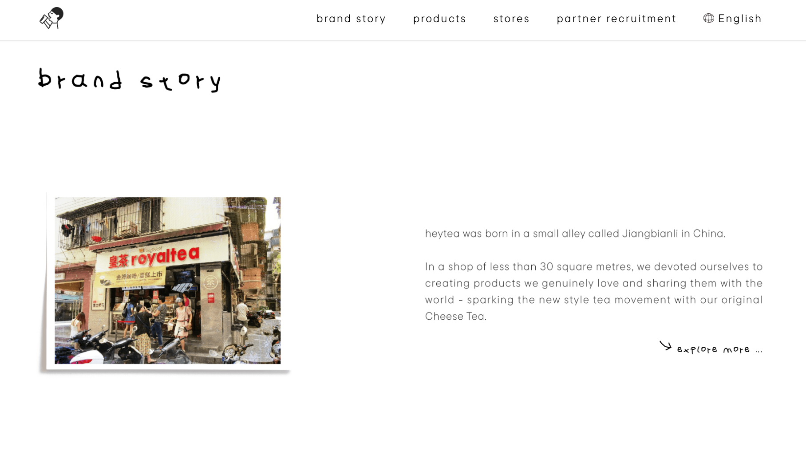
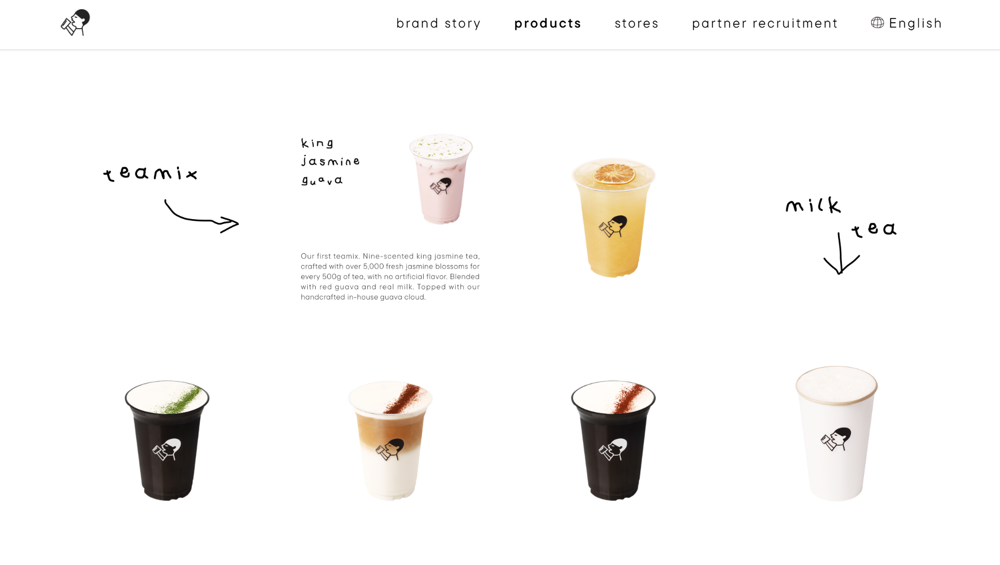
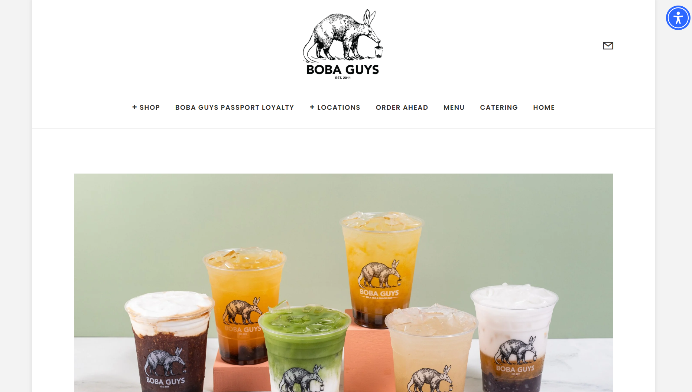
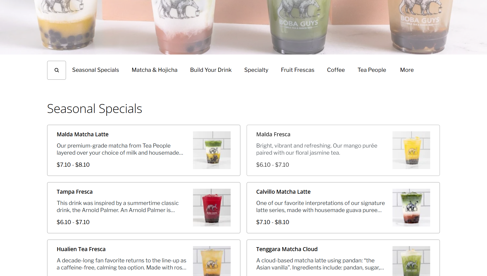
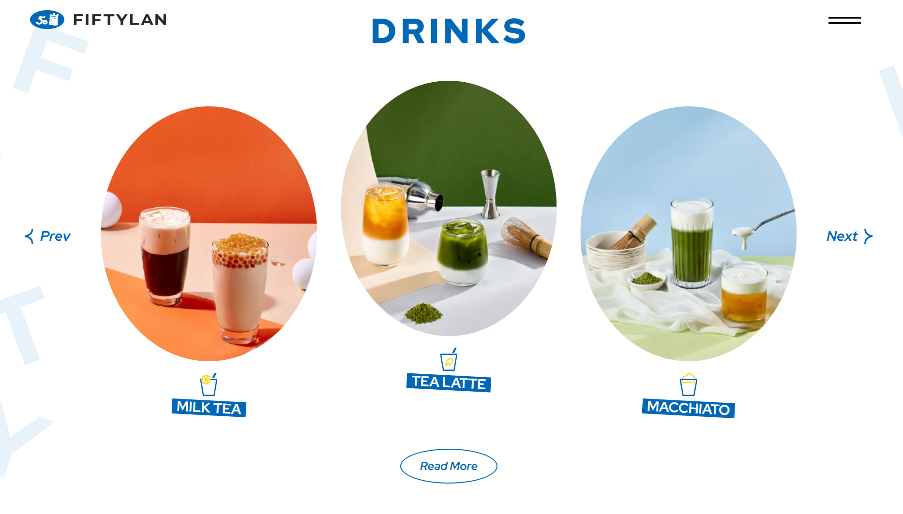
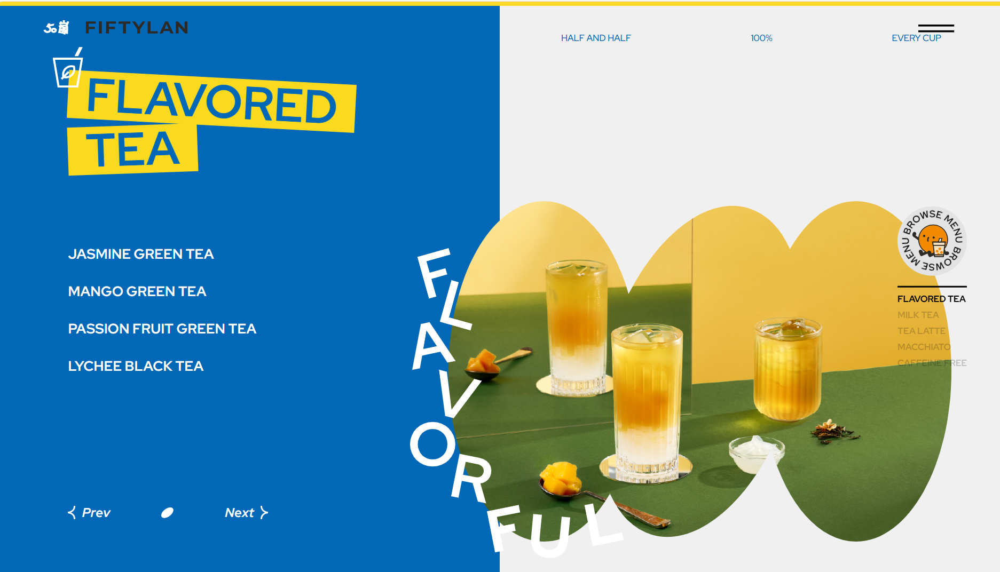

Ilha Tea
Ilha Tea is a modern Taiwanese tea bar based in San Jose, California. Inspired by Taiwan's vibrant tea culture, Ilha Tea specializes in handcrafted milk teas, fruit teas, and seasonal beverages made with freshly brewed tea, fresh fruit, and house-made toppings. Our goal is to create a welcoming space where quality ingredients and modern design come together to offer a refreshing experience for every customer.
Ilha Tea welcomes all visitors exploring Santana Row who want to enjoy handcrafted beverages and café experiences. The shop appeals to customers looking for premium bubble tea made with fresh ingredients in a relaxing environment.
Visitors can use the website to browse the menu, check business hours, find the shop's location, and decide what they would like to order before visiting. The website should make this information easy to find while reflecting the modern atmosphere of the shop.


HEYTEA has a clean, minimalist design that uses white space and simple typography to keep the focus on its products. The high-quality photography showcases each drink to create a premium, modern feel.


Boba Guys organizes its menu into clear categories, making it easy for customers to browse drinks and quickly find what they are looking for. The website uses consistent product photography, readable descriptions, and straightforward navigation to create a user-friendly experience.


FIFTYLAN presents its drinks using colorful photography and clearly separated product categories, making the menu visually engaging while still easy to navigate. The website also uses a variety of fun shapes without overwhelming the user.
Freshly brewed tea, real fruit, and handcrafted toppings come together in every drink at Ilha Tea. Whether you're taking a break from shopping, meeting friends, or simply craving a refreshing beverage, every drink is prepared to order using premium ingredients.
[Assorted handcrafted milk teas and fruit teas displayed on a wooden table with sunlight.]
At Ilha Tea, every drink begins with carefully selected loose-leaf tea and fresh ingredients. We brew each order individually and prepare our toppings daily to highlight the natural flavors of every beverage.
Our shop is designed to be a place where people can slow down, connect with friends, and enjoy thoughtfully prepared drinks in a relaxed environment. Whether you're discovering Taiwanese tea for the first time or stopping in for your favorite order, we hope every visit feels welcoming and memorable.
[A barista pouring freshly brewed tea behind a minimalist wooden counter.]
1835 Santana Row
San Jose, CA 95128
(408) 555-8888
Monday–Friday: 11:00 AM–9:00 PM
Saturday–Sunday: 10:00 AM–10:00 PM
[Storefront with large windows, outdoor seating, and customers enjoying drinks.]